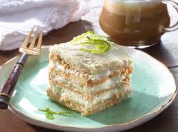

Popular
Carlota de Limon
La carlota de limón es un postre cremoso sin horno compuesto por capas de galleta maría y una deliciosa crema de limón.
Ver RecetaRecetas tradicionales con sabor auténtico
Recetas tradicionales, ingredientes frescos y sabores que evocan nuestra tierra
Explorar RecetasLa carlota de limón es un postre cremoso sin horno compuesto por capas de galleta maría y una deliciosa crema de limón.
Ver RecetaEsta recete de agua de limón es una bebida que acompaña muy bien todas las comidas.
Ver RecetaEnchiladas verdes hechas con pollo deshebrado, una vibrante salsa verde de tomatillo y chile serrano, y tortillas de maíz blanco. Este platillo clásico está lleno de sabor fresco e inspirado en las tradiciones locales de la Ciudad de México.
Ver Receta0 recetas
1 recetas
1 recetas
1 receta
¡Hola! Soy Itzelt Gonzalez, una persona que le gusta la cocina mexicana. He vivido en 3 comunidades en las que he visto como la gastromia mexica tiene mucha diversidad He visto a varias personas cocinar platillos deliciosos e increibles es por ello que quiero compartir unas cuantas recetas con ustedes.
Mi misión al crear este blog es demostrar que la cocina mexicana puede ser divertida, creativa y accesible para todos, manteniendo la autenticidad de nuestros sabores tradicionales.